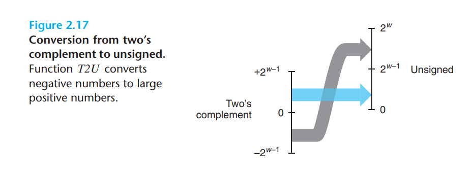
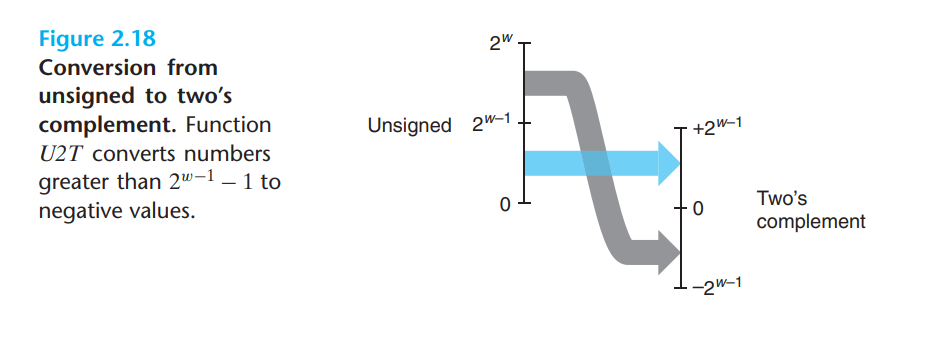
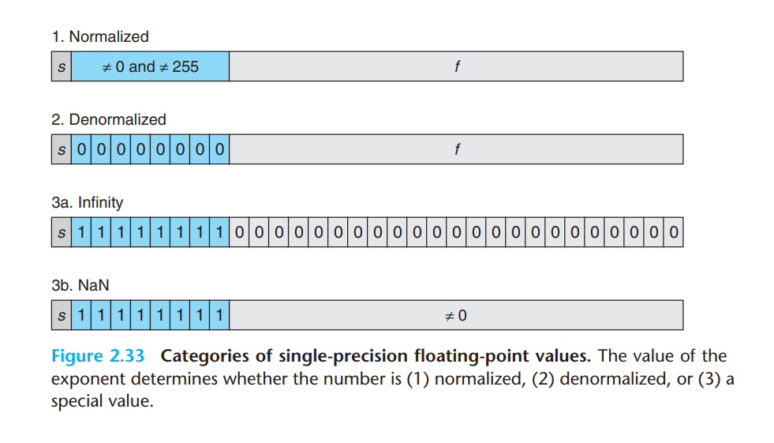
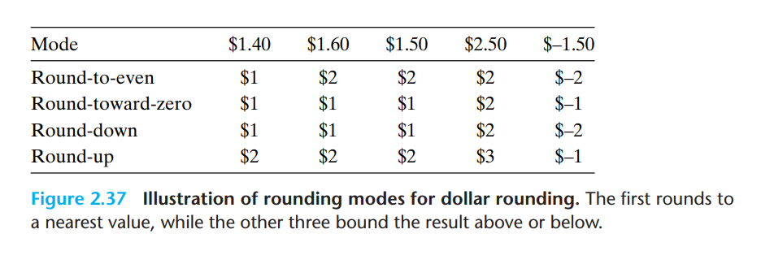

信息的表示和处理¶
约 4052 个字 60 行代码 预计阅读时间 14 分钟
信息的存储¶
大多数机器使用字节（8 位的块）作为存储器中的最小寻址单元，而非访问单独的位。内存中的每一个字节都对应一个唯一的数字，即它的地址，所有可能的地址集合构成了虚拟内存。它是由 DRAM、闪存（Flash Memory) 和磁盘存储共同实现的，而在程序看来则只是一个统一的字节数组。
编译器和运行时系统负责将内存空间划分为更加易于管理的单元，从而存储不同的程序对象。例如，C 中指针的值代表其指向的存储块内第一个字节的虚拟地址。C 编译器还将每个指针与其类型信息联系起来，这样就可以根据指针类型生成不同的机器级代码来访问指针所指向的对象。不过机器级代码中并没有任何与类型相关的信息，编译器只是简单地把每个程序对象都视为一个字节块，而把程序视为一个字节序列。
十六进制表示法¶
使用二进制表示位模式（Bit Pattern）会非常冗长，因为一个字节就包含了 8 位。而如果使用十进制，则不方便与位模式进行互相转化，因此我们采用十六进制（Hexadecimal）来书写位模式。一个十六进制数占 4 位，因此一个字节的取值范围就是 \(00_{16}\) ~ \(FF_{16}\) 。
将一个二进制数字转化为十六进制数字，需要首先将其分为多个 4 位的组，然后再将每组数转化为十六进制。如果总位数不为 4 的倍数，那么最左边的一组可以少于四位，然后在首位补 0。如 \(111100_2\) 可以分成 \(0011_2\) 和 \(1100_2\)，转化结果为 \(3C_{16}\) 。在 C 中，若一个常数以 0x 或 0X 作为前缀，则代表它是一个十六进制数字。
数据大小¶
每台计算机都有一个字长（Word Size），它指定了指针数据的标准大小。如果一台机器的字长为 \(w\) 位，那么虚拟地址的范围为 \(0～2^w -1\)，程序最多可以访问 \(2^w\) 字节。32 位机器的虚拟地址大小约为 4 GB，而 64 位机器则能达到 16 EB。
C 中几个基本数据类型的大小如下表所示：
| Signed | Unsigned | 32-bit | 64-bit |
|---|---|---|---|
| [signed] char | unsigned char | 1 | 1 |
| short | unsigned short | 2 | 2 |
| int | unsigned | 4 | 4 |
| long | unsigned long | 4 | 8 |
| int32_t | uint_32t | 4 | 4 |
| int64_t | uint_64t | 8 | 8 |
| char * | 4 | 8 | |
| float | 4 | 4 | |
| double | 8 | 8 |
除char外，若不添加前缀unsigned，则默认使用有符号类型。指针类型的数据使用机器的全字长，如char *。由于某些数据类型的大小在不同机器上有所不同，因此开发人员应使程序对不同数据类型的确切大小不敏感，从而保证程序的可移植性（Portable）。
寻址和字节顺序¶
对于包含多字节的程序对象，我们必须建立两个准则：这个对象的地址是什么和这些字节在内存中的排列顺序是怎样的。某些机器按照从最低有效字节到最高有效字节的顺序存储对象，该方式被称为小端法（Little Endian）；某些机器则与之相反，被称为大端法（Big Endian）。例如一个int类型的变量地址为 0x100，其值为十六进制的 0x1234567，那么上述两种机器存储该变量的方式分别如下：
Little Endian
| 0x100 | 0x101 | 0x102 | 0x103 | ||
|---|---|---|---|---|---|
| ... | 67 | 45 | 23 | 01 | ... |
Big Endian
| 0x100 | 0x101 | 0x102 | 0x103 | ||
|---|---|---|---|---|---|
| ... | 01 | 23 | 45 | 67 | ... |
有些时候不同的字节存储顺序可能导致一些问题：
- 不同类型的机器通过网络传递二进制数据，如小端法机器生成的数据发送到大端法机器上，程序收到的字节序列是反的。为了避免这一问题，发送方应先将数据转换为网络标准格式，接收方再将其转换为内部表达方式；
- 对于小端法机器，书写字节序列与书写数字的顺序相反；
- 某些使用强制类型转换（Cast）的程序，在不同类型的机器上编译运行的结果不同。
对于上述第三种情况，以一个程序为例：
#include <stdio.h>
typedef unsigned char *byte_pointer;
void show_bytes(byte_pointer start, size_t len)
{
size_t i;
for (i = 0; i < len; i++)
{
// %.2x 代表整数会被打印为至少两位（digits）的十六进制数字
printf("%.2x", start[i]);
}
printf("\n");
}
void show_int(int x)
{
show_bytes((byte_pointer)&x, sizeof(int));
}
void show_float(float x)
{
show_bytes((byte_pointer)&x, sizeof(float));
}
void show_pointer(void *x)
{
show_bytes((byte_pointer)&x, sizeof(void *));
}
int main()
{
int val = 12345;
float fval = (float) val;
int *pval = &val;
show_int(val);
show_float(fval);
show_pointer(pval);
}
不同类型机器的输出结果如下：
| Machine | val | fval | pval |
|---|---|---|---|
| Linux32 | 0x39300000 | 0x00e44046 | 0xe4f9ffbf |
| Windows32 | 0x39300000 | 0x00e44046 | 0xb4cc2200 |
| Sun | 0x00003039 | 0x4640e400 | 0xeffffa0c |
| Linux64 | 0x39300000 | 0x00e44046 | 0xb811e5ffff7f0000 |
这是因为 Sun 系统采用大端法，其他三者采用小端法。对于指针类型的变量，不同操作系统在存储分配上有着不同的准则。同时，64 位系统使用 8 字节地址，32 位系统使用 4 字节地址，这导致了指针类型变量pval输出结果的不同。
字符串¶
字符串在 C 中被编码为一个以NULL字符结尾（其值为 0）的字符数组，每个字符都由某种标准编码组成，如 ASCII 码。因此，如果我们执行上面的程序show_bytes("12345", 6)，将得到31 32 33 34 35 00。
由于字符串中各字符的排列顺序是由字符串本身决定的，因此字符串不会受到字节顺序的影响，除非字符使用两字节的 Unicode 进行编码。
代码¶
不同类型的机器使用不同且不兼容的指令和编码方式，因此二进制代码很少能在不同机器和操作系统组合之间移植。
布尔代数简介¶
几种布尔运算符的定义如下：
～：非，相当于逻辑运算的 NOT；&：与，相当于逻辑运算的 AND；|：或，相当于逻辑运算的 OR；^：异或，相当于逻辑运算的 EXCLUSIVE-OR。若 \(p = 0\)，\(q = 1\) 或 \(p = 1\)，\(q = 0\) 时，\(p\) ^ \(q = 1\)。
布尔运算符可以应用于位向量，即固定长度的 0、1 序列。举例来说，若 a 为 [0110]，b 为 [0101]，那么：
| Operation | Result |
|---|---|
| ~a | [1001] |
| a & b | [0100] |
| a | b | [0111] |
| a ^ b | [0011] |
C 中的位级运算¶
C 中支持按位布尔运算，上面提到的布尔运算符其实就是在 C 中使用的。一个使用布尔运算符的经典程序如下：
#include <stdio.h>
void inplace_swap(int *x, int *y)
{
*y = *x ^ *y;
*x = *x ^ *y;
*y = *x ^ *y;
}
利用对于任意数 \(a\) ，\(a\) ^ \(a\) = 0 且 \(0\) ^ \(a = a\) 这一性质，该程序不使用中间变量便完成了变量值的交换。另外，上述程序的实现还建立在异或运算满足交换律和结合律的基础之上。
C 中的逻辑运算¶
C 还提供了逻辑运算符，即||、&&和!。它们和位级运算的一个区别是，如果对第一个参数求值就能确定表达式的结果，便不会对第二个参数进行求值。如表达式a && 5 / a不会导致除数为 0 的异常，而p && *p++也不会导致空指针引用异常。
C 中的移位运算¶
C 中的移位运算有左移和右移两种，均不会改变位向量的长度。左移运算 \(x << k\) 就是 \(x\) 向左移动 \(k\) 位，丢弃 \(k\) 个高位，并在右端补充 \(k\) 个 0。通常可以使用 \(x << 1\) 和 \(x << 2\) 分别代替 \(x \times 2\) 和 \(x \times 4\)，因为位级运算拥有相比乘法更快的运算速度。
右移运算分为两种形式，逻辑和算术。无符号数据必须使用逻辑右移，\(x >> k\) 将 x 的左端补充 \(k\) 个 0 ，并丢弃 \(k\) 个低位。而大多数机器使用算术右移处理有符号数据，\(x >> k\) 将 \(x\) 的左端补充 \(k\) 个最高有效位的拷贝，并丢弃 \(k\) 个低位。
加减乘除运算符的优先级大于移位运算符，因此 \(1 << 2 + 3 << 4\) 等效于 \(1 << (2 + 3) << 4\)。
整数的表示¶
无符号编码¶
一个长度为 \(w\) 的位向量 \(\vec{x} = [x_{w-1},x_{w-2},...,x_0]\)，它从二进制（Binary）转化为无符号编码（Unsigned）的公式为：
其中， \(\doteq\) 符号表示等式的左手边被定义为右手边。无符号编码的最小值为位向量 [00...0]，即整数值 0。最大值为位向量 [11...1]，即整数值 \(U\max_w \doteq \displaystyle\sum_{i=0}^{w - 1}2^i = 2^w -1\)。函数 \(B2U_w\) 是一个双射（Bijection）：对于每个长度为 \(w\) 的位向量，都有唯一的整数值与之对应，反之亦然。
二进制补码¶
二进制补码（Two's-Complement Encoding）将位向量的符号位（即最高有效位）作为负权重（Negative Weight），符号位为 1 代表值为负，符号位为 0 代表值为正。如一个长度为 \(w\) 的位向量 \(\vec{x} = [x_{w-1},x_{w-2},...,x_0]\)，它从二进制转化为二进制补码的公式为：
二进制补码的最小值为位向量 [10...0]，即整数值 \(T\min_w \doteq -2^{w-1}\)。最大值为位向量 [01...1]，即整数值 \(T\max_w \doteq \displaystyle\sum_{i=0}^{w - 2}2^i = 2^{w-1} -1\)。与二进制转化无符号编码类似，函数 \(B2T_w\) 也是一个双射。而它们的最值之间有着如下性质：
特别地，整数 -1 和 \(U\max_w\)的位级表示均为全 1：[11...1]，而整数 0 在两种表达方式中均为全 0：[00...0]。虽然 C 标准并没有限制有符号整数的二进制表达，但大多数机器都采用了二进制补码的方式。
有符号数和无符号数的转换¶
在 C 中，有符号数和无符号数之间的转换是基于位级视角的，而非数字。例如：
short int v = -12345;
unsigned short uv = (unsigned short) v;
printf("v = %d, uv = %u\n", v, uv);
输出结果为v = -12345，uv = 53191。这意味着在类型转换过程中位向量不变，但位向量转换到整数值的方式不同。根据推导，二进制补码转换为无符号数的公式如下：
如下图所示，非负数转换前后保持不变，负数则变成了一个更大的正数：

而无符号数转换为二进制补码的公式则为：
如图所示，小于 \(2 ^ {w - 1}\) （最高有效位为 0）的数转换前后保持不变，大于等于 \(2 ^ {w - 1}\) （最高有效位为 1）的数将被转换为一个负数：

通过上面的讨论我们发现，大于等于 0 且小于 \(2 ^ {w - 1}\) 的值有相同的无符号和二进制补码表示。而这个范围之外的数，在转换过程中需要加上或减去 \(2 ^ w\)。
C 中的有符号数和无符号数¶
通常我们默认数字是有符号的，除非加上后缀 U 或 u，如 12345U 和 0x1A2Bu 等。除了显式地使用强制类型转换（如上一节中的程序）以外，也可以将一种类型的表达式赋值给另一种变量，即隐式转换：
int tx, ty;
unsigned ux, uy;
tx = ux; /* Cast to signed*/
uy = ty; /* Cast to usigned*/
如果参与运算的两个数一个是有符号的，一个是无符号的，那么 C 会隐式地将有符号数转换为无符号数并假定两数均为非负后再进行计算。比如表达式 -1 < 0U 的值为 false，因为 -1 会先被转换为无符号数再与 0 进行比较。
扩展一个数的位级表示¶
要将一个无符号数转换为更大的数据类型，只需简单地在头部添加 0，这种运算被称为零扩展（Zero Extension）。而对于二进制补码，则需要在头部添加最高有效位（符号位），即符号扩展（Sign Extension）。
当类型转换既改变数据类型的大小又改变符号类型时，则先改变大小，再改变有无符号。例如将一个short类型的变量转换为unsigned类型，它会先被转换为int类型，再被转换为unsigned类型。
截断数字¶
将一个数转换为更小的数据类型时，截断数字的位数是不可避免的。如一个 \(w\) 位的位向量 \(\vec{x} = [x_{w-1},x_{w-2},...,x_0]\) 被截断为 \(k\) 位时，我们会丢弃 \(w-k\) 个高位，得到 \({\vec{x} = [x_{k-1},x_{k-2},...,x_0]}\)。截断数字可能会导致值的变化：
通过上面几小节的讨论，我们发现无符号数与有符号数之间的隐式转换导致了一些与常识相悖的运算结果，这将导致一些很难发现的程序错误。因此很多编程语言，如 Java，不支持无符号数的使用。
整数的运算¶
无符号加法¶
两个可用 \(w\) 位无符号编码表示的非负整数 \(x\) 和 \(y\)，其范围：\(0 \leq x, y \leq 2^w -1\)，那么它们的和：\(0 \leq x+ y \leq 2^{w + 1} -2\) 就有可能需要用 \(w+1\) 位来表示。如果出现溢出便丢弃高位，因此无符号加法（\(+_w^u\)）等价于计算 \((x+y) \bmod 2^w\)，即：
模数加法构成了一种数学结构，即阿贝尔群（Abelian Group），它是可交换的和可结合的。\(w\) 位无符号数的集合执行 \(+_w^u\) 运算，对于每个值 \(x\)，必然有某个值 \(-_w^ux\) 满足 \(-_w^ux +_w^ux = 0\)，该值被称为 \(x\) 的逆元（Inverse）。当 \(x = 0\) 时，其逆元自然为 0。当 \(x > 0\) 时，显然 $ (x + 2^w - x)\bmod 2^w = 0$。由于 \(0 < 2^w -x < 2^w\)，因此 \(2^w -x\) 便是 \(x\) 的逆元。上述两种情况总结如下：
二进制补码加法¶
两个数的 \(w\) 位二进制补码之和（\(+_w^t\)）与无符号之和有着完全相同的位级表示，因此对于 \(-2^{w-1} \leq x, y \leq 2^{w-1} -1\) ，有：
进一步地，我们根据两数之和的范围，将上述结果分情况讨论，从而得到：
因此，若 \(x>0, y>0, x+_w^ty\leq 0\)，那么结果便出现了正溢出；若 \(x<0, y<0, x+_w^ty\geq 0\)，结果便出现了负溢出。
二进制补码的逆元计算公式如下：
无符号乘法¶
无符号乘法运算（\(\times_w^u\)）与加法类似，都可以转换为对 \(2^w\) 的模运算：
二进制补码乘法¶
同样与加法类似，两个数的 \(w\) 位二进制补码之积（\(\times_w^t\)）与无符号之积有着完全相同的位级表示，因此：
乘以常数¶
整数乘法运算在许多机器上运行缓慢，一个重要的优化便是使用移位运算和加法运算来代替它。我们首先考虑乘以 2 的幂的情况，然后推广到任意常数。若存在位向量 \([x_{w-1},x_{w-2},...,x_0]\)，\(x \times 2^k\) 可以表示为在其右端添加 \(k\) 个 0，即 \([x_{w-1},x_{w-2},...,x_0,0,...,0]\)。因此在 C 中，对于整数 \(x\) （无论是无符号数还是二进制补码）和 无符号数 \(k\)，\(x \times 2^k\) 就等于 \(x<<k\)。
如果一个常数可以拆分为 2 的幂的和，那么我们便可以使用左移运算和加（减）法运算来替换与相关的乘法运算。如 \(14=2^3+2^2+2^1\)，那么 \(x\times14=(x<<3)+(x<<2)+(x<<1)\)。
除以 2 的幂¶
我们使用右移运算来代替除法运算，逻辑右移和算术右移分别适用于无符号数和二进制补码。由于结果为整数，因此很可能需要进行舍入（Round）。我们定义 \(⌊ ⌋\) 为向下取整，\(⌈ ⌉\) 为向上取整。如 \(⌊3.14⌋=3\)，\(⌊-3.14⌋=-4\)，而 \(⌈3.14⌉=4\)，\(⌈-3.14⌉=-3\)。
在 C 中，对于无符号数 \(x, k\)， \(x>>k=⌊x/2^k⌋\)；对于二进制补码 \(x\) 和无符号数 \(k\)，则有 \(x>>k=⌊x/2^k⌋\)。前者为逻辑右移，后者为算术右移。
考虑到若 \(x<0\)，\(x/y\) 的结果应为 \(⌈x/y⌉\)，而非 \(⌊x/y⌋\)。我们可以利用性质：\(⌈x/y⌉=⌊(x+y-1)/y⌋\)，来修正这种不合适的舍入。因此，对于 \(x<0\) 的二进制补码除法，应使用：\((x+(1<<k)-1)>>k=⌈x/2^k⌉\)。综上，二进制补码除以 2 的幂 \(x/2^k\) 可以用三元运算符表示为：
(x<0 ? x+(1<<k)-1 : x) >> k
与乘法不同，除法无法推广到任意常数。
浮点¶
二进制小数¶
十进制小数的表示方法为 \(d_md_{m-1}...d_1d_0.d_{-1}d_{-2}...d_{-n}\)，其中 \(d_i\) 为 0～9 的整数。那么该数的大小为：
小数点左边的数的权值为 10 的非负幂，右边的则为 10 的负幂。类似地，我们可以得出二进制小数的表示方法。\(b_i\) 为 0 或 1，则二进制数 \(b_mb_{m-1}...b_1b_0.b_{-1}b_{-2}...b{-n}\) 的值为：
二进制小数点向左移动一位，相当于数字除以 2。向右移动一位，则相当于数字乘以 2。这种方法只能表示可转化为 \(x \times 2^y\) 形式的数，无法精确表示如 \(\frac{1}{3}\)、\(\frac{5}{7}\) 这样的数。
IEEE 浮点数表示¶
二进制小数的表示方法难以表示很大的数，我们更希望通过给定 \(x, y\) 的值来表示形如 \(x \times 2^y\) 的数。IEEE 浮点数标准使用 \(V=(-1)^s\times M \times 2^E\) 的形式来表示小数：
- 符号 \(s\)：为 1 代表负值，为 0 代表正值；
- 有效数 \(M\)：一个二进制小数，范围在 1 到 \(2-\varepsilon\) 或 0 到 \(1-\varepsilon\) 之间；
- 指数 \(E\)：2 的幂指数，有可能是负数。
因此，浮点数的位级表达分为了三个部分：
- 一个符号位 \(s\);
- \(k\) 位的指数域 \(exp=e_{k-1}...e_1e_0\) 编码指数 \(E\)；
- \(n\) 位的小数域 \(frac=f_{n-1}...f_1f_0\) 编码有效数 \(M\)。
对于 C 中的float类型，\(s=1, k=8, n=23\)。而对于double类型，\(s=1, k=11, n=52\)。IEEE 浮点数表示法有三种情况，如下图所示：

第一种情况是最常见的，即指数域不全为 0，也不全为 1。在这种情况下，指数域的值为 \(E=e-Bias\)，其中 \(e\) 是一个位级表达为 \(e_{k-1}...e_1e_0\) 的无符号数，\(Bias\) 则是一个等于 \(2^{k-1}-1\) 的常数。小数域的值为 \(M=1+f\)，其中，\(f\) 是一个二进制小数 \(0.f_{n-1}...f_1f_0\)。
第二张情况是指数域全为 0，这样所表示的数就是非标准化形式的。在这种情况下，\(E=1-Bias, M=f\)。非标准化数可以表示第一种情况无法表示的 0 以及非常接近 0 的数字。
第三种情况是指数域全为 1 时出现的。若小数域全为 0，得到的值则为 \(\pm \infty\)。若小数域不全为 0，则结果为 NaN，即不是一个数字。比如计算 \(\infty -\infty\) 和 \(\sqrt{-1}\)，就会得到这样的结果。
以 8 位浮点数为例，\(s=1, k=4, n=3\)，此时偏移量 \(Bias=2^{4-1}-1=7\)。最靠近 0 的是非标准化数，\(E=1-Bias=-6\)，\(2^E=\frac{1}{64}\)，\(M=f=0,\frac{1}{8},...,\frac{7}{8}\)，因此浮点数 \(V\) 的范围就是 0 ～\(\frac{7}{8\times64}=\frac{7}{512}\)。而对于最小的标准数来说，指数域为 [0001]，因此 \(E=e-Bias=-6\)，小数域 \(M=1+f=1,\frac{9}{8},...\frac{15}{8}\)，浮点数 \(V\) 的范围为 \(\frac{8}{512}=\frac{1}{64}\) ~ \(\frac{15}{512}\)。
我们可以观察到最大非标准数和最小标准数分别为 \(\frac{7}{512}\) 和 \(\frac{8}{512}\)，这种平滑的过渡得益于我们将非标准数的 \(E\) 使用 \(1-Bias\) 来计算，而非 \(-Bias\)。
在这种条件下，当指数域为 [1110]，\(E=e-Bias=7, 2^E=128\)，小数域 \(M=1+0.111_2=\frac{15}{8}\) 时，\(V\) 取到最大值 240，超出这个值就会溢出到 \(+\infty\)。值得一提的是，IEEE 浮点数可以使用整数排序函数来进行排序。
舍入¶
对浮点数的表示限制了其范围和精度，因此浮点计算只能近似地表示实数计算。IEEE 浮点数格式定义了四种不同的舍入方式：

向偶数舍入（Round-to-even），也称向最接近的数舍入（Round-to-nearest），是默认的方法。它试图找到一个最接近的匹配值，对于中间值（如表中的 1.5），则使结果的最低有效位为偶数（舍入为 2）。其他三种方法用来确定值的上下界。
即使在舍入到小数的情况下，也可以使用整数舍入，只需简单地考虑最低有效数字是偶数还是奇数。如保留两位小数，我们把十进制小数 1.234999 舍入到 1.23，把 1.235001 舍入到 1.24，而 1.235 和 1.245 均舍入到 1.24。这种方法同样可以推广到二进制小数，此时应将中间值舍入到最低有效位等于 0 的数。
浮点运算¶
浮点数的加法和乘法是实际运算后进行舍入后的结果，即对于实数 \(x, y\)，以及运算 \(\odot\)，结果为 \(Round(x\odot y)\)。IEEE 标准规定了浮点数运算的行为，这意味着它不依赖于任何具体的硬件或软件，从而实现了可移植性。
上文提到整数的加法和乘法形成了阿贝尔群，而实数亦如此，但浮点数还要考虑舍入对其特性的影响。浮点数 \(\infty\) 和 NaN 没有逆元，加法也只满足交换律但不满足结合律。类似地，浮点数乘法只满足交换律，而不满足结合律和分配律。这些特性的缺少对程序员有着非常重要的影响，如示例的简单程序：
x = a + b + c;
y = b + c + d;
编译器可以生成下列代码以省去一次浮点加法运算，从而提升效率：
t = b + c;
x = t + a;
y = t + d;
由于使用了加法结合律，计算结果可能与预期不同。因此大多数编译器对浮点运算的优化都较为保守，以免产生错误的结果。
颜色主题调整
评论区~
有用的话请给我个赞和 star => 快来跟我聊天~
快来跟我聊天~